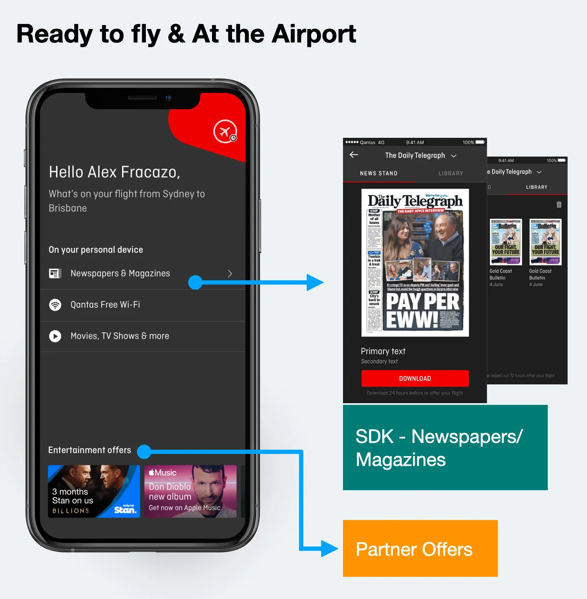
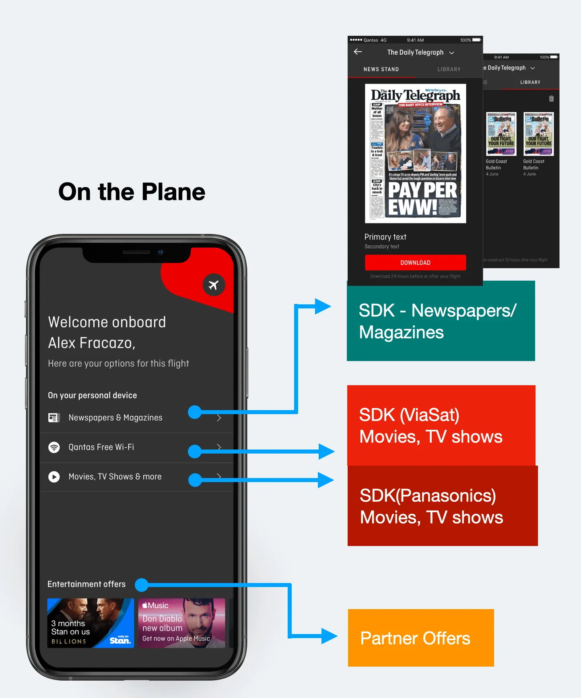
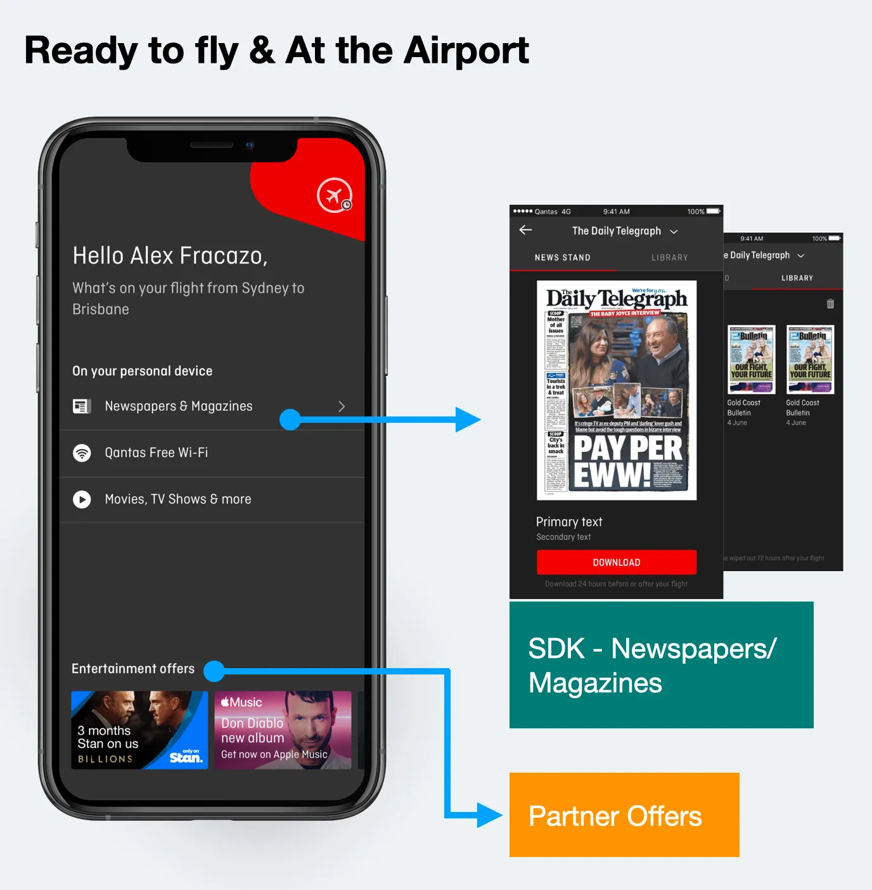
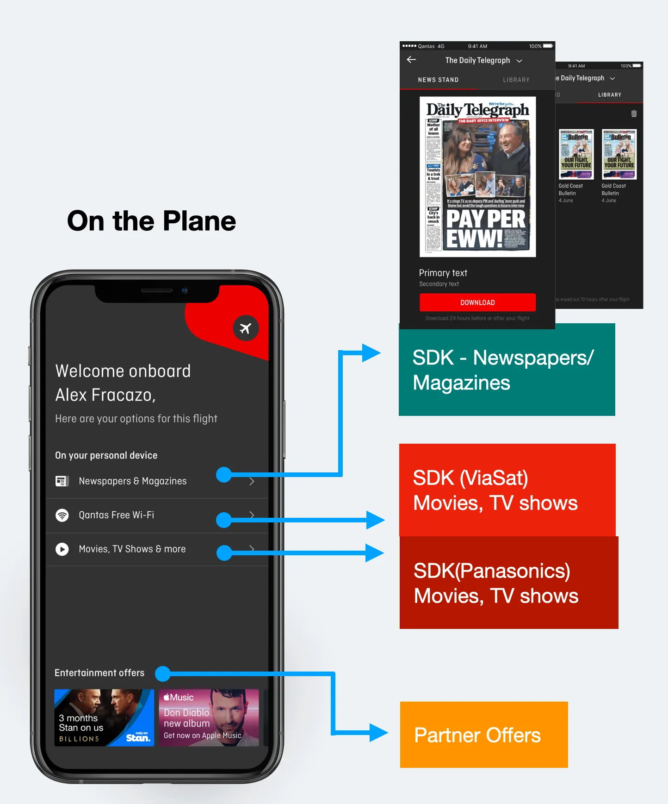
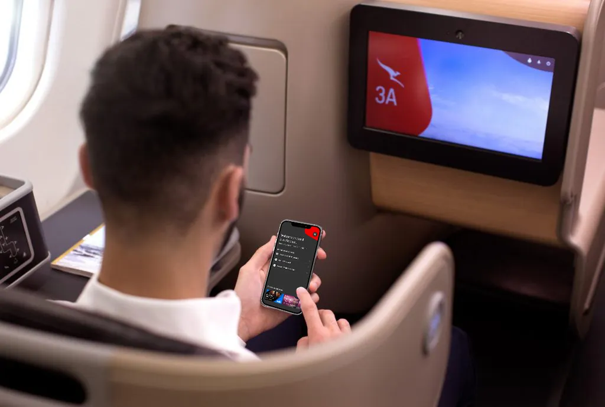

Product:
Qantas Entertainment App (iOS and Android)
Date:
2018
Role:
Lead Designer
Building more than just a product, a brand experience for Qantas Entertainment


With every passenger carrying a smartphone, tablet or laptop, Qantas saw an opportunity to transform the travel experience by installing inflight Wi-Fi on some aircraft. During my time working at Qantas, I was the lead product designer on the Entertainment squad. We identified 2 hypotheses that could increase app usage.
Having an in-depth understanding of the traveller's flight journey – pre-flight, during, and after – laid the foundations for building an effective customer experience. I held multiple workshops, conducted qualitative interviews and tested our initial assumptions via face-to-face conversations and prototypes. My desire to make the app experience as smooth and effortless as possible drove our team's design thinking, and also led to the implementation of interesting features.
The Qantas Entertainment app is used to stream entertainment to a customer's personal device, it allows the user to watch or listen to various forms of media.
A known problem was that the current app only worked when the user was on board the plane and connected to a Qantas streaming network.


Increase Entertainment app usage.
Travellers that have the Entertainment app installed on their phone don't engage with it, because the app doesn't work if not connected to the Qantas network.
We predict that increasing the entertainment offering before and after the flight will increase the app usage.
Workshops with stakeholders and team members.

The winning ideas are iterated and turned into mockups for user research.

Redesigning the app icon was part of the process during the project, as it should be the strongest connection with the user. It is what they will see first when they land or search in the App Store.
An app icon is expected to be a visual anchor for the product. It is a small piece of branding that, in addition to being attractive and standing out, should ideally also communicate the essence of the Qantas Entertainment (QE) app. Other app icons grab people's attention in the same limited space.
Reviewing the Qantas Brand Guidelines, I discovered a branded device called "pepple shape" that would work perfectly to hold a play icon.
The new icon had visibility across the Qantas group and the brand manager adopted the icon as the Qantas brand for entertainment.
Qantas Entertainment can retrieve data from the Qantas Airways app, like user name, flight and frequent flyer info.

 

The way I like to perform qualitative user testing is to start talking about their life. In a relaxing way, I ask about specific things that have happened in the past and how they solved them.
After gathering an understanding of their situation, I ask them to perform a task and I watch to see how they complete it, without helping them along the way. This gives me realistic evidence of what people would do with the real app once it is released.


We also ran embedded user tests, on board the plane.


I worked closely with engineers to validate the design and copy implementations. Along with daily stand-ups, we also had weekly demos and would occasionally sit together to cross-check implementation with final designs.

Help customers to be fully prepared by guiding them on downloading the Qantas Entertainment app before they board, including informing them on what devices to bring onboard to make the most of the Entertainment & Wi-Fi on flights.
The "what's new" feature displayed the latest 5 new movies available for the users flight. We identified huge engagement with this design pattern. There was an opportunity to add offers from Qantas partners. In order to do this our hypothesis was that merging the offer within the latest movies would increase the conversion rate on the partner offers. We designed and tested the feature which performed well.
The tech review happened only after the design was approved. During the tech review, we identified that to create this service (back-end) would take ~6 months. Therefore I changed the design and created a new design pattern to be used exclusively for Qantas partner offers, where we could automatically enable/disable or swap the partner offer content with the 5 latest movies, depending on user context and stage in their journey. This solution could be implemented in the next release.
I've learned to bring engineers to the design reviews early in the discovery journey, send weekly updates during stand-ups and also run weekly design sparring with the team.
Some ideas related to traveler expectations that could be explored further:


How to increase app downloads by +70% by connecting entertainment services in the flagship app “Qantas Airways”

I’m showcasing how we’ve changed user behaviour by design and increased the booking (connection) rate on Hireup by +12%

How I’ve automated data entry and improved the experience of those applying for an Electronic Travel Authority (ETA) visa before travelling to Australia